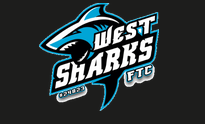

Educação
Incentivamos o aprendizado e compartilhamos conhecimentos com outras pessoas.

FIRST Tech Challenge #24823
Por meio de projetos, ações e iniciativas, buscamos aproximar a robótica das pessoas e mostrar como a tecnologia pode ser utilizada para criar soluções, oportunidades e mudanças positivas.
Incentivamos o aprendizado e compartilhamos conhecimentos com outras pessoas.

Utilizamos a robótica e a inovação para desenvolver ideias e buscar soluções.

Participamos de iniciativas que aproximam a equipe da comunidade.

Buscamos novas possibilidades e formas de gerar impacto por meio da criatividade.